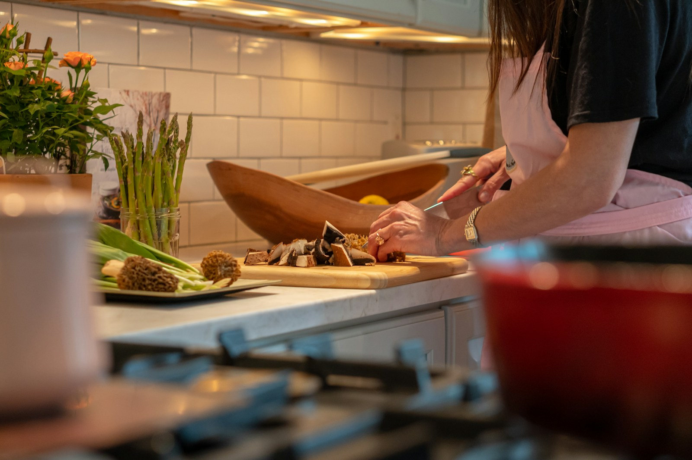
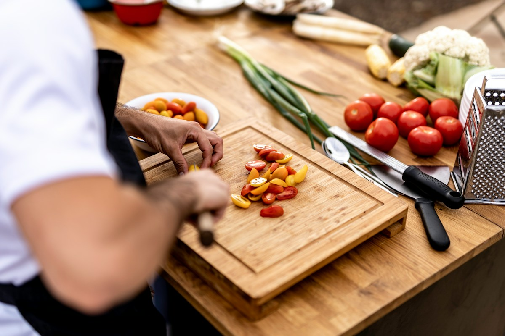
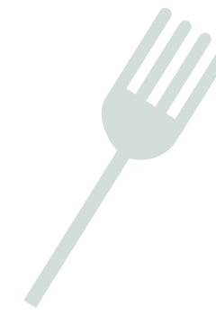

Ingredientes reales
Productos frescos que consigues en cualquier mercado de tu barrio.
Recetas caseras, sencillas y nutritivas para preparar hoy mismo, sin ingredientes raros ni pasos complicados.
Empezar ahora
Productos frescos que consigues en cualquier mercado de tu barrio.
Pasos cortos y claros para cocinar sin estrés, incluso entre semana.
Busca por plato o ingrediente y llega directo a la receta que quieres.
No necesitas ser chef. Cada receta se prepara en menos de 20 minutos, usa pocos utensilios y deja muy poco por lavar.
Ideal si recién empiezas en la cocina o si buscas ideas nuevas para el menú de la semana.


Elige una receta y ten la cena servida antes de lo que imaginas.
Ver recetas